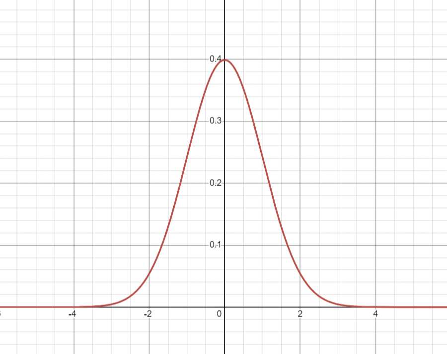

INTRODUCTION

Protostats is a website designed to help users with learning particular subjects within the field of statistics. It offers a user-friendly platform for acquiring knowledge. With Protostats, users can navigate through specific topics, ensuring a tailored and effective learning experience. Protostats aims to make statistics accessible and engaging, empowering users to build a solid foundation or enhance their existing skills in this crucial field.
Many students consider statistics to be a challenging subject to master because they identify it with mathematics and anticipate learning only about formulas and numerical calculations. Due to a lack of efficient learning resources, they have difficulty learning and comprehending the material at hand. Additionally, it may make it more difficult to evaluate, analyze, and make well-informed decisions based on the data. This website's goal is to assist students who are having difficulty with the relevant subject.
Statistics is a branch of mathematics that deals with the collection, analysis, interpretation, presentation, and organization of data. It plays a crucial role in making informed decisions in various fields, ranging from science and business to social sciences and healthcare. One essential aspect of statistical analysis is hypothesis testing, a method used to evaluate assumptions and draw conclusions about a population based on sample data.
In hypothesis testing, we start with a null hypothesis (H0) that assumes there is no significant difference or effect, and an alternative hypothesis (H1) that suggests otherwise. Statistical tests are then employed to determine the probability of obtaining the observed data under the assumption that the null hypothesis is true.
The Z-score is a statistical measure that quantifies how many standard deviations a particular data point is from the mean of a dataset. It is a valuable tool in hypothesis testing as it helps in standardizing and comparing data from different distributions. By converting raw data into Z-scores, we can assess the relative position of individual data points within a dataset, facilitating comparisons and analyses.
The Probability value is defined as the probability under the assumption of no effect or no difference (null hypothesis), of obtaining a result equal to or more extreme than what was actually observed. The P stands for probability and measures how likely it is that any observed difference between groups is due to chance.
In the context of hypothesis testing, Z-scores are often utilized to calculate p-values, which represent the probability of observing a particular result or more extreme results under the null hypothesis. A lower p-value indicates stronger evidence against the null hypothesis, leading to its rejection in favor of the alternative hypothesis.
This introduction sets the stage for a deeper exploration of how statistics, including the concept of Z-scores, is employed in hypothesis testing to make informed decisions and draw meaningful conclusions from sample data. As we delve into specific examples and applications, we will gain a better understanding of the role that statistical analysis plays in enhancing our understanding of the world around us.